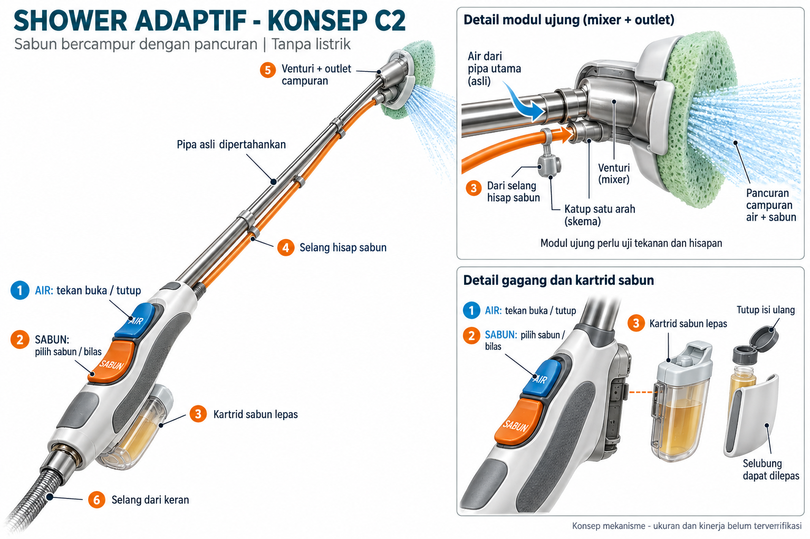

PRATINJAU INTERAKTIF
MATI
Kenali setiap bagian

Menyiapkan model 3D…
Tentang tampilan ini
Mulai dari kontrol AIR dan SABUN, atau pilih bagian yang ingin diperiksa.
Simpan rancangan
Untuk ditinjau kembali atau dibuka di aplikasi 3D.